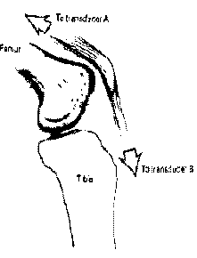
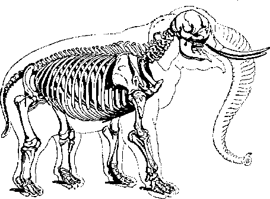
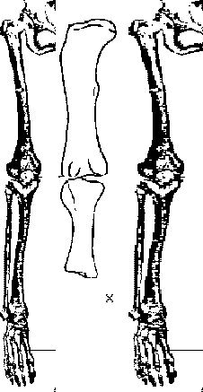
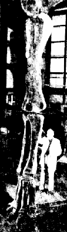
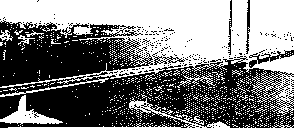
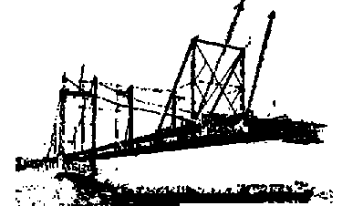
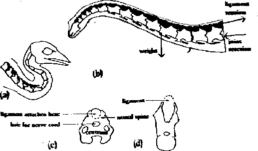

Sauropodomorfos, Elefantes, Levantadores de Peso
Questões Estruturais
por Wayne Throop
Membros
Ted has traditionally dismissed that any difference in limb structure between human and sauropod could be a significant factor.We can at least partly quantify that amount of leverage. It would be the ratios of the Holden Numbers of the two cases. Thus,Message-ID: <medved.778903263@access1> O bom senso diz que pode haver alguma diferença de alavanca entre Kazmayer e um elefante grande ou um saurópode, mas que não há alavanca suficiente no mundo para permitir que um desses caras chegue a 360.000 libras, quando Kaz, que é muito mais musculoso do que eles, só consegue chegar a cerca de 21.000.
360000^(1/3) / ((1000+340)/340^(2/3)) ~= 2.6We can see that the maximum projected mass in 1g goes up as the cube of this leverage factor.
Nota adicional: as patas dos saurópodes não precisam ser tão musculadas quanto as de Kazmaier, porque o saurópode possui quatro patas e Kazmaier está empregando apenas duas. Portanto, o acima está assumindo patas muito menos musculadas do que as de Kazmaier. Na verdade, dado esse fator de alavanca, cada pata precisaria de apenas metade da seção transversal muscular em comparação com a perna de Kazmaier.
E, finalmente, note que a estimativa de Ted de 360.000 lbs de massa para o ultrasaur é claramente maior do que qualquer figura atualmente aceita. Foi feita via projeção linear de algumas vértebras, nem mesmo um esqueleto remotamente completo, e em [tD] e [KoC], há discussões sobre por que o tamanho e a forma do ultrasaur são incertos, no mínimo. A maioria dos pesquisadores coloca o maior sauropodo conhecido em algo como 80 a 100 toneladas, o que tornaria a vantagem de alavanca necessária
200000^(1/3) / ((1000+340)/340^(2/3)) ~= 2.1
Portanto, a questão torna-se: pode uma vantagem de alavanca ser descoberta nos membros dos saurópodes, talvez em uma proporção de 2 para 1 em relação aos membros humanos? Primeiro, considere o que Alexander tem a dizer em [tHM]

A rótula não é meramente um dispositivo para permitir que o tendão do quadríceps deslize sobre o fêmur como uma corda em uma polia. A força em uma corda é a mesma em ambos os lados de uma polia, mas o tendão do quadríceps puxa com menos força na tíbia do que o músculo puxa nela. Isso foi demonstrado por experimentos em joelhos, como o mostrado [aqui] em fig. 4.6a. Transdutores de força foram anexados ao tendão acima e abaixo da rótula. Eles foram puxados em direções apropriadas, com a rótula nas posições que ocuparia em vários ângulos de joelho. A força registrada pelo transdutor B igualou a força no transdutor A quando o joelho estava esticado e os dois tendões alinhados um com o outro, mas quando o joelho estava flexionado a um ângulo reto, a força em B era apenas metade daquela em A.
O ponto é que as articulações do joelho humano têm uma desvantagem de alavanca construída de 2 para 1. Tudo o que um sauropodo teria que fazer é ter uma disposição ligeiramente diferente da rota do tendão sobre o joelho para obter alavanca suficiente para se manter em pé em 1g. E, como pode ser visto quando os diagramas [vistos abaixo] das articulações do joelho humano e de elefante são comparados, existem muitas diferenças na estrutura, incluindo o tamanho e a posição da rótula, e na estrutura das superfícies de suporte de carga. Menos detalhes são preservados sobre as articulações de sauropodos nas referências que vi, mas é muito plausível que as articulações de sauropodos pudessem evitar a desvantagem mecânica e estar em vantagem significativa quando comparadas às articulações humanas.

Observe especialmente as estruturas exageradas do cotovelo e do joelho, que proporcionam alavancagem significativa, o que pode ser visto neste diagrama de um esqueleto de elefante de o livro de McGowan [DS&S].
Observe também as pequenas diferenças na estrutura da patela e da articulação ao comparar o joelho humano com o de um elefante.
![[Joelho de elefante]](../../../pictures/holden/struct-fig2b.gif)
{kind=link}
Especificamente, Alexander continua dizendo
Esta redução de força pelo joelho pode parecer uma desvantagem, mas é acompanhada por uma amplificação do movimento.That is, the human knee is designed for trotting (or perhaps swimming if you are a fan of the Teoria do Primata Aquático), but not for efficient heavy loadbearing.
Mas isso é apenas o começo. Vamos considerar outras formas de estimar a alavanca dos membros.
Here Ted is recommending comparing an artist's drawing with a photograph, and going from outside appearance instead of skeletal structure. Of course, when this is done, the results vary wildly with just which artist's drawing you choose, and which dimensions you consider significant.Message-Id: <medved.775504609@access1> Uma análise de um dos melhores levantadores de peso, como Kazmaier, e de um elefante ou saurópodo escalado para o mesmo peso deve convencer qualquer pessoa de que as pernas do levantador humano são mais robustas, e que, portanto, a alavanca favoreceria o humano;
![[Ossos]](../../../pictures/holden/struct-fig3.gif) É muito menos vulnerável à subjetividade usar imagens de ossos reais. Por exemplo, Tim Walters (twalters@intuit.com) publicou uma comparação imagem (vista aqui). A partir desta imagem, que compara os tamanhos e formas reais de uma tíbia humana e de um braquiossauro escalados para comprimentos iguais, é claro que o braquiossauro tem uma vantagem de alavanca de 1,75 a 2 vezes, quando a alavanca é estimada pela largura da articulação sobre o comprimento do segmento da extremidade.
É muito menos vulnerável à subjetividade usar imagens de ossos reais. Por exemplo, Tim Walters (twalters@intuit.com) publicou uma comparação imagem (vista aqui). A partir desta imagem, que compara os tamanhos e formas reais de uma tíbia humana e de um braquiossauro escalados para comprimentos iguais, é claro que o braquiossauro tem uma vantagem de alavanca de 1,75 a 2 vezes, quando a alavanca é estimada pela largura da articulação sobre o comprimento do segmento da extremidade.
Pode-se argumentar que não sabemos quão espessas são as tíbias de Kazmaier. Mas, em humanos, o exercício geralmente engrossa o fêmur, não as articulações e nem o comprimento. Portanto, é improvável que sejam extremamente diferentes.
Em seguida, considere um conjunto de imagens (visto abaixo) comparando membros esqueléticos de uma perna humana de um livro de anatomia, um fêmur e tíbia de um braquiossauro do livro didático [tD], o esqueleto humano "ampliado" para 160 kg e, finalmente, a "reconstrução de Jensen" da extremidade anterior de um ultrasauro do livro de Lessum [KoC].


Neste caso, os comprimentos do fêmur/húmero estão escalonados de forma igual, e medições subsequentes utilizando a estimativa largura-articulação/comprimento-segmento-limbo também mostram uma vantagem de alavanca de aproximadamente 1,75 para 1 a favor do braquiossauro/ultraossauro.
Ainda estamos apenas estimando de forma bastante grosseira a partir de imagens, mas pelo menos elas são representações precisas de artefatos reais em vez de uma interpretação artística, como Ted recomendou. Melhor ainda seria reconstruir os ossos e deduzir as inserções dos tendões e seu trajeto, e realizar medições muito mais precisas.
Mas mesmo com essas medidas grosseiras, é plausível que a estrutura do tendão mais as diferenças dimensionais básicas (que são independentes) possam combinar-se para gerar diferença suficiente de alavanca para tornar os sauropódios possíveis em 1g, talvez até um fator de 3 ou mais, muito acima do fator de 2 que é necessário. Certamente, o ônus da prova de Ted para demonstrar que sua alegação de que "não há alavanca suficiente no mundo" para tornar os sauropódios possíveis em 1g não foi satisfeito.
Pescoços
Ted argues that sauropod necks are too long and massive to have been supportable in 1g. For example, in this excerpt from his página htmlVocê não suspende uma carga de 30.000 lb a 40' no espaço, mesmo que seja feita de madeira e materiais estruturais, quanto mais de carne e osso. Nenhum inspetor de construção nos Estados Unidos poderia ser subornado o suficiente para permitir que você construísse algo assim. No entanto, o pescoço de um sauropodo, particularmente no caso das recentes descobertas de ultrasaur e seismosaur, pesava várias vezes o peso de um elefante grande e, se estendido para fora horizontalmente, na verdade arcaria para baixo (o jeito errado).Now, what structural arguments does Ted advance that a non-arch structure cannot bear high loads? None at all. He simply assumes it. Assumes it wrongly, as it turns out. In an exchange on this subject, Ted posted
It turns out there::: medved@access4.digex.net (Ted Holden) ::: pescoços de ultrasaur/supersaur/brachiosaur/seismosaur [...] ::: arqueiam-se na direção errada quando segurados horizontalmente. :: gthomson@gpu.srv.ualberta.ca (Greg Thomson) :: Oh really, já viu uma ponte suspensa? : medved@access4.digex.net (Ted Holden) : Já viu uma ponte suspensa sustentada apenas de um lado?

Esta é a ponte Knie concluída, uma imagem de "Cable Stayed Bridges: Theory and Design", Troitsky, Crosby Lockwood Staples, Londres, 1977, página 58. Todo o suporte é fornecido por tração em cabos que se originam na margem oposta.
Esta é uma imagem da mesma fonte, da ponte em construção. Foi construída estendendo-se diretamente sobre o rio, sem suporte de dupla extremidade; como no pescoço de um sauropodo, foi suportada por forças de tração nos cabos (ligamento nucal) e forças de compressão ao longo da estrutura do tabuleiro (coluna vertebral).
A afirmação de Ted de que uma forma arqueada é necessária está errada.
Porém, a questão permanece: o pescoço do sauropode é forte o suficiente para ter sido sustentado quando esticado reto em 1g? Esta questão é abordada no livro de Alexander sobre Dinossauros e dinâmica [DD&EG].
Diplodocus e Apatosaurus possuem vértebras cervicais com espinhas neurais em forma de V. Sugiro que o V estava preenchido por um ligamento de elastina que percorria todo o comprimento do pescoço e se estendia para trás até o tronco. Este ligamento teria ajudado a suportar o pescoço enquanto permitia ao dinossauro levantar e abaixar a cabeça.In the past, Ted has focused on the "would be enough, or nearly enough, to break ligamentum nuchae" statement in Alexander's presentation. But the exact size and composition of the ligament is unknown in detail, and as Alexander said "quase" enough", which includes the case of "not enough stress to break". In other words, as Alexander concluded, "the suggestion of an elastin ligament seems feasible".Fiz alguns experimentos para descobrir se a ideia era viável. [...] a massa da cabeça e do pescoço reais teria sido de 1.340*10 = 13.400 newtons. [...]
Só podemos adivinhar a espessura do ligamento, mas parece provável que ele se projetasse acima das pontas das espinhas neurais. Se for assim, sua linha central, na base do pescoço, estava a cerca de 0,42 metros acima do centro do centróide. [...]

O peso atua a 2,2 metros da articulação e a tensão do ligamento necessária para equilibrar o peso é de 2,2 * 13.400/0,42 = 70.000 newtons (7 toneladas-força). A terceira força mostrada no diagrama [vista aqui] é a força na própria articulação, onde um centróide pressiona o próximo.
A tensão calculada pode parecer enorme, mas o ligamento era muito grosso. Se fosse tão grosso quanto no diagrama, sua área da seção transversal seria de 40.000 milímetros quadrados e a tensão nele, para uma força de 70.000 newtons, seria de 1,8 newtons por milímetro quadrado. Isso é mais do que a tensão no ligamento nuchae de um cervo com a cabeça baixa (cerca de 0,6 newtons por milímetro quadrado) e seria suficiente, ou quase suficiente, para romper o ligamento nuchae. No entanto, essa tensão só atuaria se o ligamento suportasse o pescoço sem qualquer ajuda dos músculos. Se os músculos do pescoço assumissem parte da carga (como fazem nas aves), a tensão teria sido menor. A sugestão de um ligamento de elastina parece viável.
{kind=link}
Agora, Ted disse que mesmo se o diplodocus for viável (talvez limítrofe, mas viável), os maiores sauropodomorfos, especialmente o ultrasaurus ou o seismosaurus, estariam definitivamente fora.
Isso não se mostra ser o caso. As proporções reais do pescoço de outros sauropódios eram diferentes das de Diplodocus. Mesmo considerando o seismossaurio, que muito se assemelha a um diplodocus escalado 1,6 vezes, e, portanto (se escalado isometricamente) teria tido 1,6 vezes a carga por área em seu ligamento nucal, também tinha (de acordo com Gillette em [StES]) espinhos neurais proporcionalmente duas vezes mais longos. A força total no ligamento aumenta como a quarta potência do comprimento (massa vezes braço de alavanca), e a capacidade de suporte de carga aumenta apenas como o cubo (seção transversal do ligamento vezes braço de alavanca). Estender o braço de alavanca do ligamento, como descrito por Gillette, compensa o aumento da carga, e o seismossaurio não está, portanto, em pior situação que o diplodocus, no geral.
Seria ainda melhor medir em mais detalhe, mas o ponto é que o seismossáurio, o ultrasáurio, o que quer que você escolha, plausivelmente tinha força suficiente para mover o pescoço em gravidade de 1g. Mesmo para os maiores saurópodes, "a sugestão de um ligamento de elastina parece viável".
[Anterior] |
[Topo] |
[Próximo] |
| As Perguntas Frequentes | Arquivos Imperdíveis | Índice | Criacionismo | Evolução | Idade da Terra | Geologia do Dilúvio | Catastrofismo | Debates |